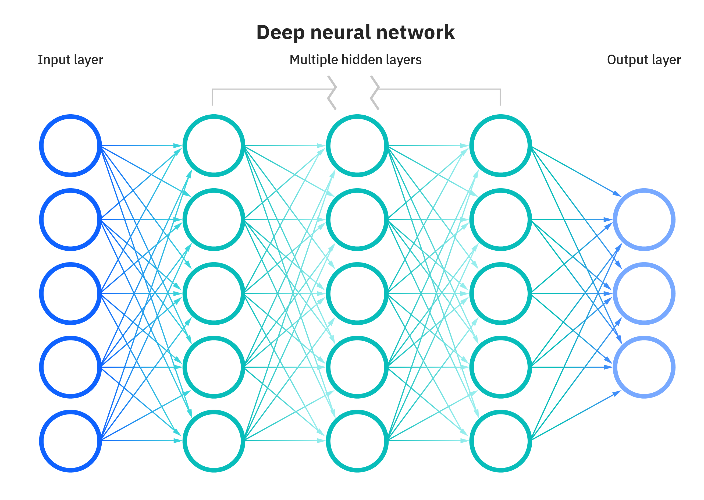

# Download Dataimport torchimport numpy as npfrom torchvision import datasetstrain_dataset = datasets.FashionMNIST(root='./data', train=True, download=True)test_dataset = datasets.FashionMNIST(root='./data', train=False, download=True)# constant for classesclasses = ['T-shirt/top', 'Trouser', 'Pullover', 'Dress', 'Coat','Sandal', 'Shirt', 'Sneaker', 'Bag', 'Ankle Boot']x = train_dataset.datay = train_dataset.targets### New code# Reshape and cast the input datax = x.view(-1, 784)x = x.to(torch.float32)# Cast the target labels to the 'long' data typey = y.to(torch.long)#### Split data into train & valid setfrom sklearn.model_selection import train_test_splitvalid_pct =.2x_train, x_valid, y_train, y_valid = train_test_split(x, y, test_size = valid_pct)# Normalizationdef min_max_scale(data, a=0, b=1):# Calculate the minimum and maximum values of the data data_min = data.min() data_max = data.max()# Perform Min-Max Scaling data_norm = (data - data_min) / (data_max - data_min)# Rescale the data to the [a, b] range data_norm = a + data_norm * (b - a)return data_normx_train_norm = min_max_scale(x_train)x_valid_norm = min_max_scale(x_valid)# Load datafrom torch.utils.data import TensorDataset, DataLoaderdef load_data(x_tensor, y_tensor, batch_size, test): data = TensorDataset(x_tensor, y_tensor) data_loader = DataLoader(data, batch_size=batch_size, shuffle=not test, drop_last=not test)print(f"Total Mini-Batches: {len(data_loader)}")for i, (x, y) inenumerate(data_loader):if i ==0:print(f"Shape of Each Mini-Batch: {x.shape}")print("")breakreturn data_loaderbatch_size =128train_loader = load_data(x_train_norm, y_train, batch_size=batch_size, test =False)valid_loader = load_data(x_valid_norm, y_valid, batch_size=batch_size, test=True)
Total Mini-Batches: 375
Shape of Each Mini-Batch: torch.Size([128, 784])
Total Mini-Batches: 94
Shape of Each Mini-Batch: torch.Size([128, 784])
Trong đoạn mã trên, tôi đã bổ sung một đoạn code đã được dùng nhiều lần ở chương trước để tiến hành việc thay đổi kích thước của biến x, đồng thời thay đổi kiểu dữ liệu (dtype) cho cả x và y. Những thay đổi này được thêm vào để tránh việc lặp lại các bước này khi đang huấn luyện mô hình.
Trong mạng neural (neural network), có hai khái niệm quan trọng cần được nhắc đến đó là:
Hidden Layer (Fully Connected Layer)
Activation Function
Hidden Layer
Fully connected Layer
Đây là hình ảnh của một mạng neural đơn giản, hay có thể gọi là Linear Layer, mà chúng ta đã thảo luận trong chương trước. Trong hình ảnh này, mạng neural đơn giản được minh họa với 5 đầu vào và 3 đầu ra. Tuy nhiên, trong trường hợp dữ liệu Fashion MNIST mà chúng ta đang xem xét, thực tế là có 784 đầu vào và 10 đầu ra. Đây chỉ là một ví dụ minh họa để giúp chúng ta hiểu cách mạng neural hoạt động.

Mạng Nơ-ron bao gồm các lớp ẩn (hidden layer) nằm giữa lớp đầu vào và lớp đầu ra. Trong hình ảnh này, có 3 lớp ẩn, mỗi lớp ẩn bao gồm 5 units (biểu tượng bởi các hình tròn trong hình). Trong khi đó, Linear Layer mà chúng ta đã thảo luận trong chương trước được xem như không có lớp ẩn và không có đơn vị (units) nằm ở các lớp ẩn.
Ở đây, khi một unit được kết nối với tất cả các units ở lớp trước đó, chúng ta có thuật ngữ là Fully Connected Layer (Lớp Kết Nối Đầy Đủ).
Trong thực tế, quyết định có bao nhiêu lớp hidden layer và mỗi lớp ẩn có bao nhiêu đơn vị là hoàn toàn linh hoạt và phụ thuộc vào bài toán cụ thể bạn đang giải quyết. Điều quan trọng là bạn cần xác định rõ lớp đầu vào và lớp đầu ra. Ví dụ, trong Fashion MNIST, lớp đầu vào luôn có 784 đơn vị và lớp đầu ra luôn có 10 đơn vị để phù hợp với dữ liệu.
Activation Function
Hàm kích hoạt (activation function) trong mạng neural là một yếu tố quan trọng quyết định cách mỗi neuron hoặc nút (node) trong mạng phản ứng và truyền giá trị đến các neuron trong lớp tiếp theo. Hàm kích hoạt giúp mạng neural học và biểu diễn các mô hình phức tạp, đặc biệt là các mô hình phi tuyến tính.
Trong mạng neural, hầu hết các unit hay nút (node) ở các lớp ẩn (hidden layer) đều cần phải đi qua hàm activation, trong khi các unit ở lớp đầu vào (input layer) và lớp đầu ra (output layer) thường không cần sử dụng hàm activation.
Có một số hàm activation function phổ biến được sử dụng trong deep learning, bao gồm:
Sigmoid: Hàm kích hoạt này là một hàm đơn giản biến đổi mọi số thành giá trị nằm trong khoảng từ 0 đến 1.
example = torch.tensor([4., -100., -3., 100.])relu_result = torch.relu(example)relu_result
tensor([ 4., 0., 0., 100.])
ReLU (Rectified Linear Unit) là một hàm đơn giản với công thức f(x) = max(0, x), nghĩa là nó chuyển đổi mọi giá trị âm thành 0 và giữ nguyên giá trị dương.
example = torch.tensor([4., -100., -3., 100.])softmax_result = torch.softmax(example, dim=0)# Print the values of the tensor with decimal formattingprint(softmax_result)for value in softmax_result:print(f'{value:.2f}')
Softmax là một hàm kích hoạt (activation function) được sử dụng trong mạng neural để biến đổi một tensor thành một phân phối xác suất, tức là nó chuyển đổi mọi giá trị trong tensor sao cho tổng của chúng bằng 1.
Thông thường, ReLU là một hàm activation function phổ biến được sử dụng trong các lớp ẩn (hidden layers) của mạng neural. Vì vậy, trong mô hình của mình, tôi sẽ lựa chọn sử dụng ReLU như một hàm kích hoạt cho các lớp ẩn của mạng neural.
Altogether
def train_model(train_loader, valid_loader, loss_fn, \ optimizer_algorithm, lr, n_epochs):# Assume 3 hidden layers, each with 200 units weight_input = torch.randn(784, 200, requires_grad=True) bias_input = torch.zeros(200, requires_grad=True) weight_hd1 = torch.randn(200, 200, requires_grad=True) bias_hd1 = torch.zeros(200, requires_grad=True) weight_hd2 = torch.randn(200, 200, requires_grad=True) bias_hd2 = torch.zeros(200, requires_grad=True) weight_hd3 = torch.randn(200, 10, requires_grad=True) bias_hd3 = torch.zeros(10, requires_grad=True) parameters = [weight_input, bias_input, weight_hd1, bias_hd1, \ weight_hd2, bias_hd2, weight_hd3, bias_hd3]# Get the optimizer function based on the provided algorithm name opt_fn =getattr(torch.optim, optimizer_algorithm) optimizer = opt_fn(parameters, lr=lr)# Lists to store losses and training accuracy losses = torch.zeros(n_epochs, len(train_loader)) train_acc = torch.zeros(n_epochs, len(train_loader)) valid_acc = torch.zeros(n_epochs, len(valid_loader))for epoch inrange(n_epochs):for i, (x, y) inenumerate(train_loader):# Forward pass hd1 = x @ weight_input + bias_input hd1 = torch.relu(hd1) hd2 = hd1 @ weight_hd1 + bias_hd1 hd2 = torch.relu(hd2) hd3 = hd2 @ weight_hd2 + bias_hd2 hd3 = torch.relu(hd3) out = hd3 @ weight_hd3 + bias_hd3# Calculate loss loss = loss_fn(out, y)# Backpropagation loss.backward() optimizer.step() optimizer.zero_grad()# Store the loss losses[epoch, i] = loss.item()# Calculate training accuracy acc =100* (out.argmax(1) == y).float().mean() train_acc[epoch, i] = acc# Evaluation on validation datawith torch.no_grad():for j, (x, y) inenumerate(valid_loader): hd1 = x @ weight_input + bias_input hd1 = torch.relu(hd1) hd2 = hd1 @ weight_hd1 + bias_hd1 hd2 = torch.relu(hd2) hd3 = hd2 @ weight_hd2 + bias_hd2 hd3 = torch.relu(hd3) out = hd3 @ weight_hd3 + bias_hd3 acc =100* (out.argmax(1) == y).float().mean() valid_acc[epoch, j] = accreturn parameters, losses, train_acc, valid_acc
Trong đoạn code trên, tôi sử dụng một kiến trúc mạng neural (neural network architecture) với 3 lớp ẩn (hidden layer), mỗi lớp ẩn bao gồm 200 units.
import torchimport torch.nn as nnclass Model(nn.Module):def__init__(self):super().__init__()# Assume 3 hidden layers, each with 200 unitsself.input= nn.Linear(784, 200)self.hd1 = nn.Linear(200, 200)self.hd2 = nn.Linear(200, 200)self.hd3 = nn.Linear(200, 10)self.layers = [self.input, self.hd1, self.hd2]def forward(self, x):# Forward passfor layer inself.layers: x = layer(x)# Apply ReLU Activation Function x = torch.relu(x) out =self.hd3(x)return outdef train_model(model, train_loader, valid_loader, \ loss_fn, optimizer_algorithm, lr, n_epochs):# Get the optimizer function based on the provided algorithm name opt_fn =getattr(torch.optim, optimizer_algorithm) optimizer = opt_fn(model.parameters(), lr=lr)# Lists to store losses and training accuracy losses = torch.zeros(n_epochs, len(train_loader)) train_acc = torch.zeros(n_epochs, len(train_loader)) valid_acc = torch.zeros(n_epochs, len(valid_loader))for epoch inrange(n_epochs):for i, (x, y) inenumerate(train_loader): out = model.forward(x)# Calculate loss loss = loss_fn(out, y)# Backpropagation loss.backward() optimizer.step() optimizer.zero_grad()# Store the loss losses[epoch, i] = loss.item()# Calculate training accuracy acc =100* (out.argmax(1) == y).float().mean() train_acc[epoch, i] = acc# Evaluation on validation datawith torch.no_grad():for j, (x, y) inenumerate(valid_loader): out = model.forward(x) acc =100* (out.argmax(1) == y).float().mean() valid_acc[epoch, j] = accreturn model, losses, train_acc, valid_acc
Phiên bản code trước đó có vẻ “rối như mạng nhện”, tuy nhiên, bây giờ chúng ta đã sử dụng PyTorch như một cây chổi để dọn dẹp cái mạng nhện ấy, để lại cho chúng ta một phiên bản code “sáng sủa như bình minh”.
Bằng cách sử dụng PyTorch, chúng ta đã tạo ra một phiên bản code sạch sẽ và hiệu quả hơn. Điều quan trọng là chúng ta hiểu rõ từng dòng code đang làm gì. Mã clean và PyTorch giống như cặp đôi hoàn hảo, giúp chúng ta tiết kiệm thời gian và nỗ lực trong việc xây dựng các mô hình Deep Learning phức tạp.
import time# Get the start timestart_time = time.time()model = Model()# Define the loss function (CrossEntropyLoss) and optimizer algorithm (Adam)loss_fn = nn.CrossEntropyLoss()optimizer_algorithm ="Adam"# Set the learning rate and number of training epochslearning_rate =0.01n_epochs =5parameters, losses, train_acc, valid_acc = train_model(model, \ train_loader, \ valid_loader, \ loss_fn, \ optimizer_algorithm, \ learning_rate, \ n_epochs)# Get the end timeend_time = time.time()# Calculate the execution timeexecution_time = end_time - start_time# Convert to minutes and secondsexecution_time_minutes =int(execution_time //60)execution_time_seconds =round(execution_time %60, 2) print(f"Model training time: {execution_time_minutes} min {execution_time_seconds}s")
Model training time: 11 min 41.77s
import matplotlib.pyplot as pltfinal_loss = losses.mean(1)[-1]final_train_acc = train_acc.mean(1)[-1]final_valid_acc = valid_acc.mean(1)[-1]fig, axs = plt.subplots(1, 2, figsize = (14, 3))axs[0].plot(range(losses.shape[0]), losses.mean(1), "-o")axs[0].set_title(f"Train Loss is: {final_loss:.4f}")axs[1].plot(range(train_acc.shape[0]), train_acc.mean(1), "-o")axs[1].plot(range(valid_acc.shape[0]), valid_acc.mean(1), "-o")axs[1].set_title(f"Train: {final_train_acc:.2f}%, Valid: {final_valid_acc:.2f}%")axs[1].legend(["Train", "Valid"])plt.suptitle(f"Result with Neural Network", fontsize =16)plt.show()
Kết quả cao hơn so với simple neural network ở chương trước, xác suất dự đoán cao trên 85%. Bây giờ, hãy cùng kiểm tra để xem liệu kết quả trên tập dữ liệu kiểm tra (test set) có cao hơn so với simple neural network không.
x_test = test_dataset.datay_test = test_dataset.targets# Reshape and cast the input datax_test = x_test.view(-1, 784)x_test = x_test.to(torch.float32)x_test_norm = min_max_scale(x_test)# Cast the target labels to the 'long' data typey_test = y_test.to(torch.long)
out = model.forward(x_test_norm)test_acc =100* (out.argmax(1) == y_test).float().mean()ids_error = (out.argmax(1) != y_test).nonzero()print(f"In {len(y_test)} images, model guess wrong {len(ids_error)}")print(f"Accuracy is: {test_acc:.2f}%")
In 10000 images, model guess wrong 1458
Accuracy is: 85.42%
Với mô hình Neural Network và sau 5 epochs, chúng ta đã đạt được độ chính xác cao hơn 85% trên tập dữ liệu kiểm tra. Đây là một bước tiến so với trên 80% của Linear Layer mà chúng ta đã đạt được trong chương trước. Điều này chỉ ra rằng Neural Network có tiềm năng mạnh mẽ hơn đối với bài toán này.
Tuy nhiên, câu hỏi đặt ra là liệu chúng ta có thể làm cho mô hình tốt hơn nữa không? Có phương pháp nào để tối ưu hóa mô hình hiện tại và nâng cao xác suất dự đoán?
Chúng ta sẽ tiếp tục khám phá những phương pháp tiên tiến trong các chương tiếp theo, bao gồm Regularization để ngăn chặn overfitting, kết hợp với sử dụng GPU để tăng tốc độ huấn luyện và cải thiện hiệu suất. Đó chính là những cách mạnh mẽ để cải thiện hiệu suất của mô hình và làm cho nó trở nên mạnh mẽ và ổn định hơn!
fig, axs = plt.subplots(3, 3, figsize=(16, 8))for ax in axs.flatten():# Select a random index from the output random_index = np.random.choice(len(out))# Display the image at the selected index with colormap gray for correct predictions true_label = y_test[random_index] guess_label = out.argmax(1)[random_index]if true_label == guess_label: ax.imshow(x_test[random_index].view(28, 28), cmap="gray")else: ax.imshow(x_test[random_index].view(28, 28)) ax.set_title(f"Guess: {classes[guess_label]}, True: {classes[true_label]}") ax.axis("off")plt.suptitle("Result", fontsize=16)plt.show()